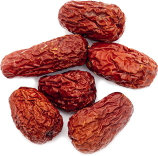
冬天保养的重点是固肾气，健脾胃。
冬吃苦，把肾补。
鱼儿是怎样过冬的呢？它们躲在结冰的水面下，水里的温度并不很低。同样的，冬天人的肾精也应当封藏在体内。
冬天要固摄肾气，肾气足的人身体才强壮。
冬天人们一般吃得比较多，脾胃的负担比较重，所以也需要健胃助消化。
冬吃苦有助于固肾和健胃。苦味分为两种：一种是苦而寒的食物，有清心火的作用，比如苦瓜、莲子心、绿茶；一种是苦而温的食物，能健胃助消化，还能帮助祛除人体下部的寒湿，有强肾的作用，比如羊肉、咖啡、红茶、松针，以及炒焦后的含淀粉食物（山楂、红枣、米、面），这些都适合在冬天吃。
读者评论
——暴走劳拉WJ
——美丽邂逅
金丝焦枣茶是整个冬天一家老小都可以喝的一道保健茶方，是用小的红枣炒黑之后冲泡而成，取的就是这个红枣炒焦之后的药性。
【原料】
干金丝小枣500克。
【做法】
【功效】
健胃养心，适合小孩和产妇饮用，也适合普通人冬季保健。
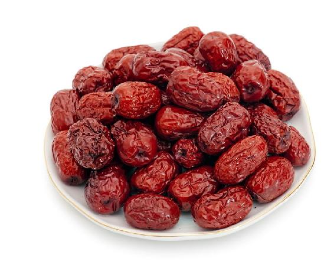
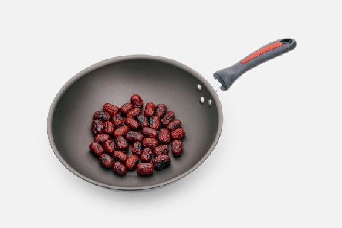
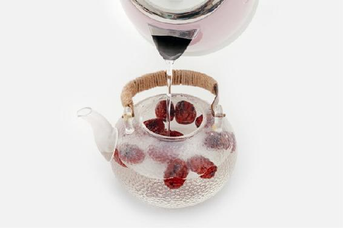
允斌叮嘱
读者评论
——竹木简
——淘淘鱼
——珉珉
——橄榄树
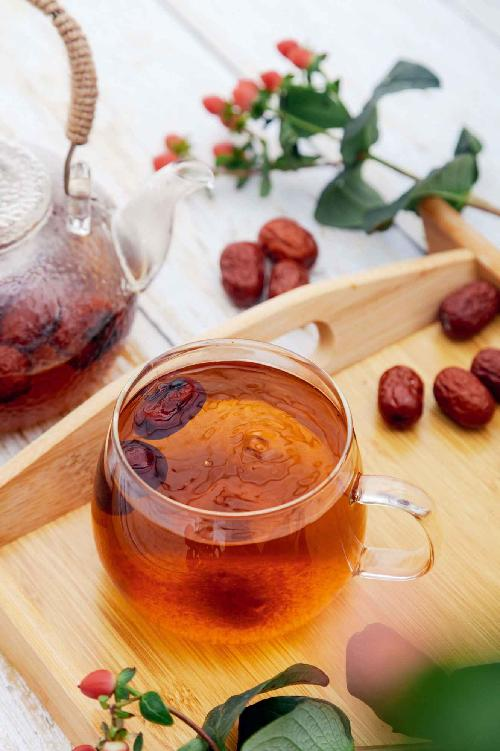
秋季的保健茶山楂甘草茶，立冬之后，血脂高、经常吃油腻食物的人还可以喝，肾虚怕冷的人，就加上小茴香一起饮用。
小茴香是大补肾阳的，适合肾阳虚的人常吃。古人随身佩戴它，作为珍贵的香料使用，称为“怀香”。现代人有福，小茴香随处可以买到，所以不要错过这大好的补肾佳品。
【原料】
小茴香9克、干山楂（中药名：生山楂）30克、甘草6克。
【做法】
【功效】
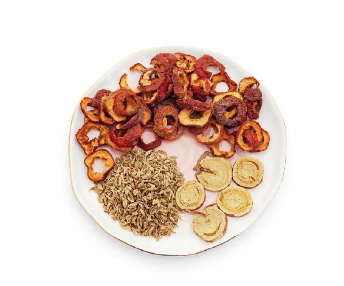
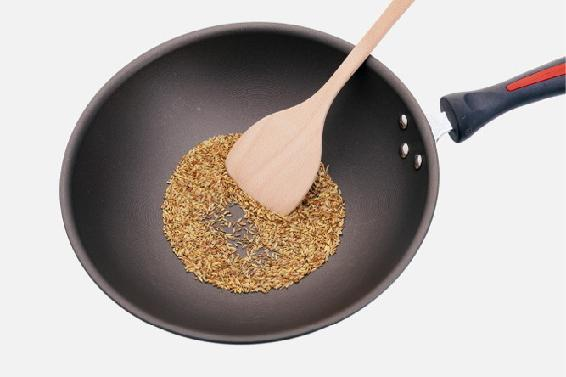
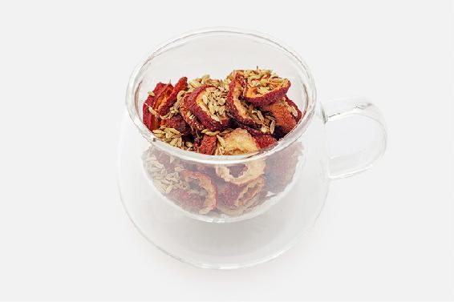
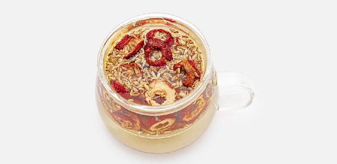
允斌叮嘱
——燕儿
——27群读者
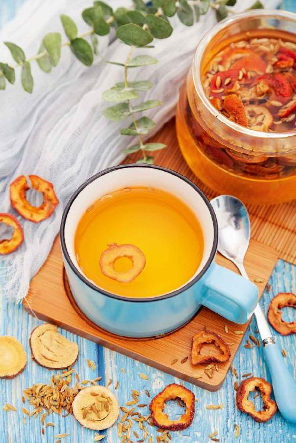
山楂一般不生吃，尤其不能空腹生吃。生山楂吃多了伤胃，对牙齿也有腐蚀作用，有龋齿的人特别要当心。
【原料】
新鲜山楂500克、蜂蜜250克。
【做法】
【功效】
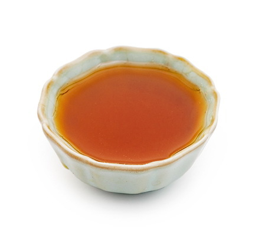
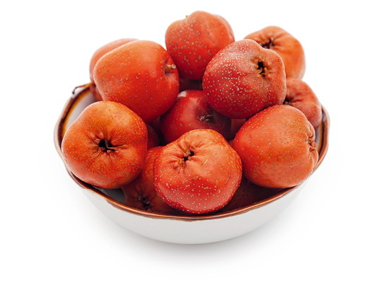
读者评论
——Mahdⅰs小公主
——春晓
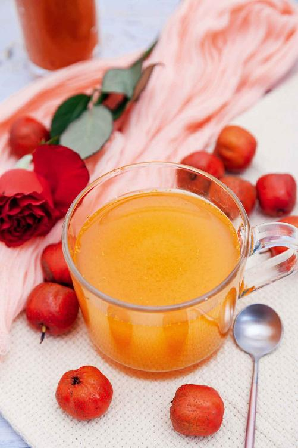
冬瓜各部分都有利水消肿的作用，但比较寒凉，只有冬瓜瓤基本不凉，作用比较温和，秋冬季也可以适量饮用。
冬瓜名为“冬”瓜，却是夏天成熟的。如果秋冬季想要减去身体多余的水分，就可以把冬瓜瓤晒干了，留到秋冬季来用。
【原料】
冬瓜瓤3个、蜂蜜适量。
【做法】
【功效】
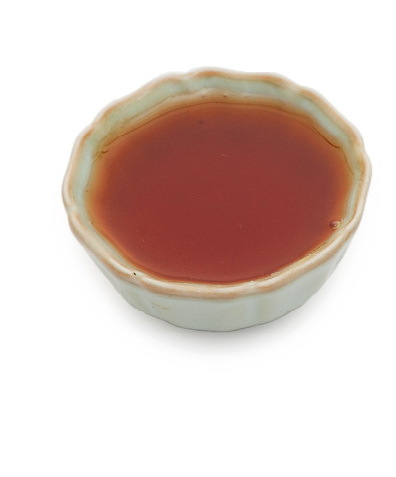
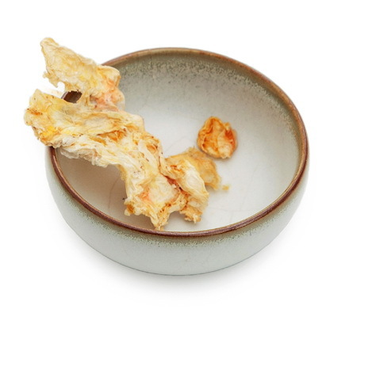
允斌叮嘱
新鲜的冬瓜瓤可以用来煮水洗脸，有美白的作用。
——风铃
——扬子双
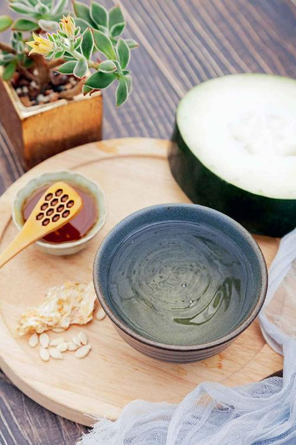